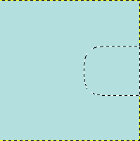

O comando , enevoa as bordas da seleção. Ele cria uma transição suave entre a seleção e suas redondezas. Você normalmente suaviza as bordas da seleção com a opção “Enevoar bordas” das ferramentas de seleção, mas você pode enevoa-la de novo com este comando, ou usa-lo em uma seleção que não foi criada diretamente com as ferramentas de seleção. Internamente, com esse comando, o GIMP aplica o filtro de Desfocagem Gaussiana na seleção.
- Enevoar seleção por
-
Entre com o valor de enevoamento da seleção. A unidade padrão é o pixel, mas você também pode escolher outras unidade através do menu suspenso.
- Selected areas continue outside the image
-
If the selection is on border of the image (or goes beyond the border), this option acts as if the selected area continued outside the image.
Figura 16.23. Example

Original. Selection on border.

Option checked. The right border is not feathered.

Option unchecked